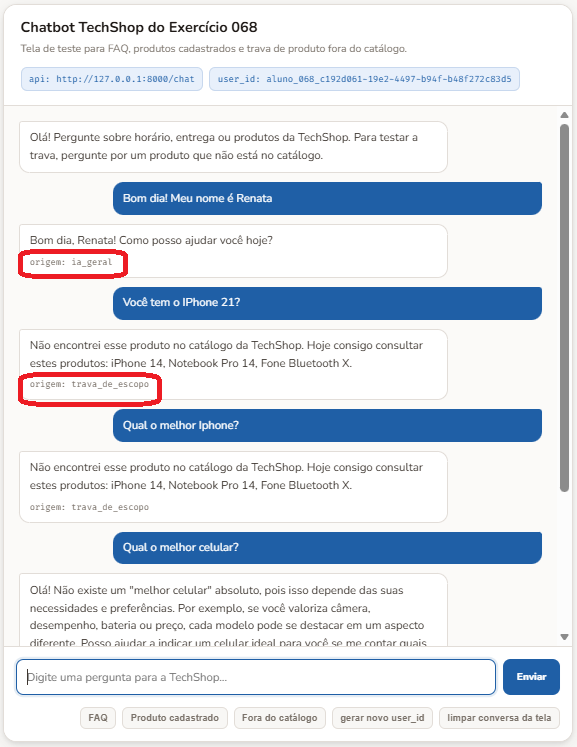
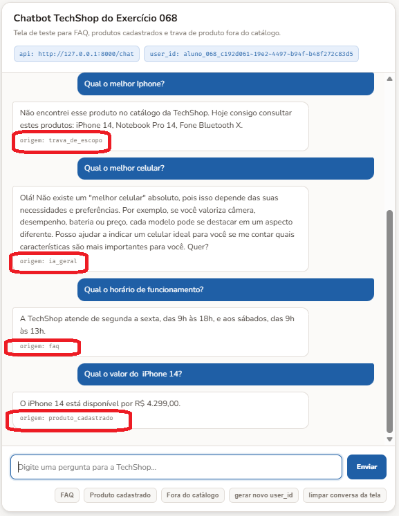
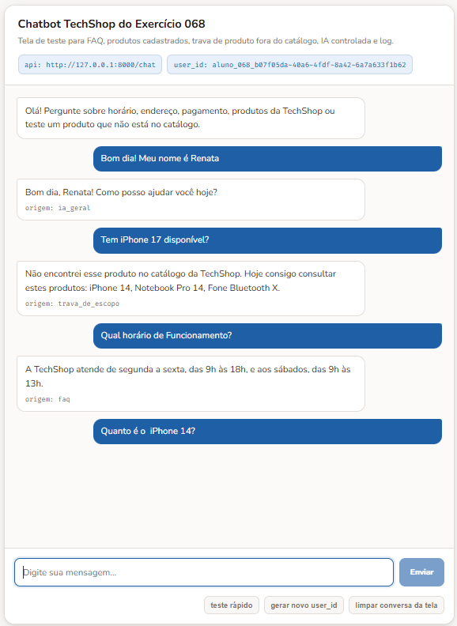
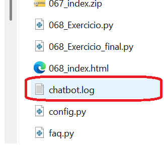
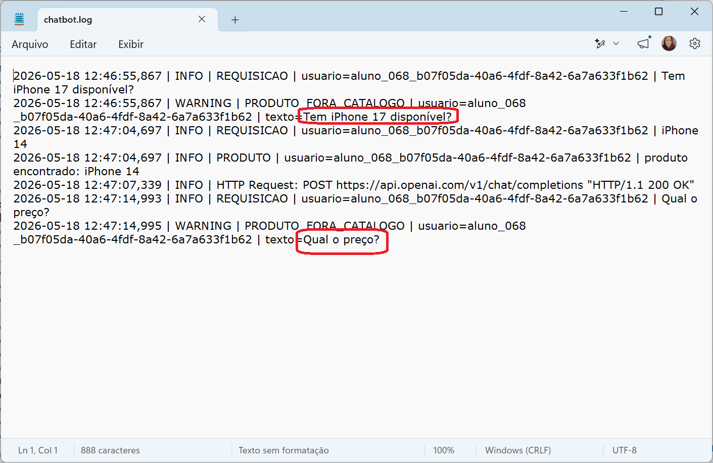

O chatbot já consegue conversar, chamar a IA e receber perguntas por uma página HTML. Agora nós vamos organizar o sistema para ele não depender só da boa vontade da IA. Uma loja, uma clínica ou um banco não pode deixar a IA inventar produto, preço, regra de troca ou disponibilidade. O código precisa decidir quando a IA pode responder e quando ela precisa ficar dentro dos dados cadastrados.
Pensa numa loja de tecnologia. Se alguém pergunta o horário de funcionamento, a resposta não precisa de IA. Se alguém pergunta o preço de um produto cadastrado, a IA até pode ajudar a escrever a resposta, mas os dados precisam sair do catálogo. E se alguém pergunta por um produto que não existe no catálogo, o sistema não pode tentar adivinhar. Ele precisa responder que aquele produto não está cadastrado.
Vamos criar agora os arquivos que precisamos para compor esse chatbot, mais "inteligente", o primeiro arquivo que faremos é o faq.py. FAQ significa perguntas frequentes. Na prática, é uma lista de perguntas que aparecem muitas vezes e que têm resposta pronta. Isso serve para deixar o atendimento mais rápido, mais barato e mais previsível. Nós colocamos as palavras que podem indicar aquela dúvida e a resposta que deve voltar.
FAQ = [ { "palavras": ["horario", "funcionamento", "abre", "fecha"], "resposta": "A TechShop atende de segunda a sexta, das 9h às 18h, e aos sábados, das 9h às 13h." }, { "palavras": ["endereco", "loja", "localizacao", "onde fica"], "resposta": "A loja fica na Avenida Central, 1000, perto da estação principal." }, { "palavras": ["troca", "devolucao", "garantia"], "resposta": "A troca pode ser solicitada em até 7 dias, com nota fiscal e produto sem sinais de uso." }, { "palavras": ["pagamento", "cartao", "pix", "boleto"], "resposta": "Aceitamos Pix, cartão de crédito, cartão de débito e boleto para compras pelo site." } ] def buscar_faq(texto_normalizado): for item in FAQ: for palavra in item["palavras"]: if palavra in texto_normalizado: return item["resposta"] return None
| FAQ | Guarda as respostas frequentes. Cada item tem uma lista de palavras e uma resposta pronta. |
| palavras | São pistas dentro da frase do usuário. Se a pessoa escrever horário, funcionamento, abre ou fecha, o código entende que é a mesma intenção. |
| buscar_faq() | Procura uma resposta pronta. Ela recebe o texto já normalizado, passa pelas palavras cadastradas e devolve a resposta quando encontra uma combinação. |
| return None | Indica que o FAQ não encontrou nada. Assim o sistema pode tentar outro caminho sem quebrar. |
O segundo arquivo separado será o produtos.py. Ele faz o papel de catálogo. Catálogo, aqui, é a fonte simples de verdade sobre o que a loja tem. Se o produto está nesse arquivo, o sistema pode responder sobre ele. Se não está, o sistema bloqueia a resposta inventada.
PRODUTOS = { "iphone 14": { "nome": "iPhone 14", "preco": "R$ 4.299,00", "estoque": 8, "descricao": "Smartphone Apple com 128 GB, câmera dupla e tela de 6,1 polegadas." }, "notebook pro 14": { "nome": "Notebook Pro 14", "preco": "R$ 5.899,00", "estoque": 5, "descricao": "Notebook com 16 GB de memória, SSD de 512 GB e tela de 14 polegadas." }, "fone bluetooth x": { "nome": "Fone Bluetooth X", "preco": "R$ 249,90", "estoque": 20, "descricao": "Fone sem fio com cancelamento de ruído e bateria de até 30 horas." } } GATILHOS_PRODUTO = [ "produto", "preco", "valor", "estoque", "disponivel", "comprar", "iphone", "notebook", "fone" ] def parece_pergunta_de_produto(texto_normalizado): return any(gatilho in texto_normalizado for gatilho in GATILHOS_PRODUTO) def buscar_produto(texto_normalizado): for nome_normalizado, dados in PRODUTOS.items(): if nome_normalizado in texto_normalizado: return dados return None def nomes_cadastrados(): return [dados["nome"] for dados in PRODUTOS.values()]
| PRODUTOS | É a base de produtos cadastrados. Cada produto tem nome, preço, estoque e descrição. |
| GATILHOS_PRODUTO | Ajuda o código a perceber que a pergunta parece ser sobre produto. Isso é importante para acionar a trava certa. |
| parece_pergunta_de_produto() | Verifica se a frase tem cara de consulta de produto. Se tiver, o sistema consulta o catálogo antes de chamar a IA. |
| buscar_produto() | Procura o produto pelo nome cadastrado. Se não encontrar, a IA não recebe liberdade para inventar. |
| nomes_cadastrados() | Lista os produtos disponíveis para consulta. Isso permite responder ao usuário com opções reais. |
Agora juntamos os dois arquivos no servidor. O arquivo 068_Exercicio.py recebe a pergunta pela rota /chat, normaliza o texto e segue uma ordem simples. Primeiro tenta FAQ. Depois verifica se parece produto. Se for produto e não estiver no catálogo, a resposta sai do próprio código. Essa é a correção da alucinação de produto fora do catálogo.
import os import unicodedata import warnings import httpx import urllib3 from dotenv import load_dotenv from fastapi import FastAPI from fastapi.middleware.cors import CORSMiddleware from openai import OpenAI from pydantic import BaseModel from faq import buscar_faq from produtos import buscar_produto, nomes_cadastrados, parece_pergunta_de_produto warnings.filterwarnings("ignore") urllib3.disable_warnings() load_dotenv() app = FastAPI() app.add_middleware( CORSMiddleware, allow_origins=["*"], allow_methods=["*"], allow_headers=["*"], ) client = OpenAI( api_key=os.getenv("OPENAI_API_KEY"), http_client=httpx.Client(verify=False), ) class Pergunta(BaseModel): texto: str user_id: str = "default" def normalizar(texto): texto = texto.lower().strip() texto = unicodedata.normalize("NFD", texto) return "".join( caractere for caractere in texto if unicodedata.category(caractere) != "Mn" ) def responder_com_ia(mensagem, contexto=None): system_prompt = ( "Você é a assistente virtual da TechShop. " "Responda em português, com clareza e sem inventar informações." ) if contexto: system_prompt += f"\nUse somente estes dados para responder:\n{contexto}" resposta = client.chat.completions.create( model="gpt-4.1-mini", messages=[ {"role": "system", "content": system_prompt}, {"role": "user", "content": mensagem}, ], temperature=0.2, max_tokens=180, ) return resposta.choices[0].message.content @app.get("/") def raiz(): return {"mensagem": "Assistente TechShop no ar"} @app.post("/chat") def chat(pergunta: Pergunta): texto_original = pergunta.texto.strip() texto_normalizado = normalizar(texto_original) resposta_faq = buscar_faq(texto_normalizado) if resposta_faq: return {"origem": "faq", "resposta": resposta_faq} if parece_pergunta_de_produto(texto_normalizado): produto = buscar_produto(texto_normalizado) if not produto: cadastrados = ", ".join(nomes_cadastrados()) return { "origem": "trava_de_escopo", "resposta": ( "Não encontrei esse produto no catálogo da TechShop. " f"Hoje consigo consultar estes produtos: {cadastrados}." ), } contexto = ( f"Produto: {produto['nome']}\n" f"Preço: {produto['preco']}\n" f"Estoque: {produto['estoque']} unidades\n" f"Descrição: {produto['descricao']}" ) return { "origem": "produto_cadastrado", "resposta": responder_com_ia(texto_original, contexto), } return { "origem": "ia_geral", "resposta": responder_com_ia(texto_original), }
| from faq import buscar_faq | Importa a busca do FAQ. O servidor não precisa carregar as perguntas frequentes dentro do mesmo arquivo. |
| from produtos import ... | Importa a consulta do catálogo. O servidor pergunta ao arquivo de produtos o que existe e o que não existe. |
| resposta_faq = buscar_faq(...) | Primeira tentativa. Pergunta frequente é respondida antes da IA. |
| if parece_pergunta_de_produto(...) | Segunda decisão. Se a pergunta parece sobre produto, o código consulta o catálogo. |
| if not produto | Trava contra alucinação. Quando o produto não está cadastrado, a IA não é chamada para improvisar. |
| responder_com_ia(..., contexto) | IA com limite. Quando o produto existe, a IA recebe somente os dados daquele produto para escrever uma resposta melhor. |
| httpx.Client(verify=False) | Usado aqui por causa de ambiente de aula e possíveis bloqueios de certificado. A observação completa fica no último código em que esse recurso aparece. |
Para rodar esse conjunto, os três arquivos Python precisam ficar na mesma pasta: faq.py, produtos.py e 068_Exercicio.py. O comando do servidor fica assim: python -m uvicorn 068_Exercicio:app --reload. Depois abrimos o 068_index.html no navegador e testamos frases como “Qual o horário de atendimento?”, “Tem iPhone 14?” e “Tem iPhone 17?”.


Até aqui, nós separamos duas coisas que pertencem ao atendimento da TechShop. No faq.py, ficam perguntas frequentes, como horário, endereço, troca e pagamento. No produtos.py, ficam os produtos que realmente existem no catálogo. Isso já impede a parte mais perigosa da alucinação, porque produto fora da base não passa livre para a IA inventar.
Agora entra outra separação. Quando definimos como a IA devia se comportar, colocamos tudo no próprio código do chatbot, agora vamos fazer uma arrumação no projeto. Vamos tirar esses ajustes de dentro do servidor e colocar em um arquivo próprio, chamado config.py.
Exatamente. O config.py passa a ser o lugar dos ajustes gerais. Quando quisermos trocar o modelo, alterar a temperatura, mudar o limite de tokens, ajustar o nome do bot ou definir o arquivo de log, mexemos nele. O servidor continua fazendo o trabalho principal, mas fica mais limpo e mais fácil de manter.
Agora criaremos o config.py para organizar nosso arquivo, e continuarmos trabalhando com o nosso projeto 068_Exercicio.py.
MODELO = "gpt-4.1-mini" TEMPERATURA_PADRAO = 0.3 TEMPERATURA_DADOS = 0.1 MAX_TOKENS = 180 NOME_BOT = "Assistente TechShop" EMPRESA = "TechShop" SYSTEM_BASE = ( "Você é a assistente virtual da TechShop. " "Responda em português, de forma clara e objetiva. " "Não invente produto, preço, disponibilidade, prazo ou política da loja." ) LOG_ATIVO = True LOG_ARQUIVO = "chatbot.log" LOG_LEVEL = "INFO" TIMEOUT_API = 30 SSL_VERIFY = False EXIGIR_PRODUTO_CADASTRADO = True MOSTRAR_PRODUTOS_DISPONIVEIS = True
| MODELO | Guarda o modelo chamado pela IA. Antes esse valor ficava direto na chamada da OpenAI. Agora fica concentrado no arquivo de configuração. |
| TEMPERATURA_PADRAO | Define a variação das respostas gerais. É usada quando a pergunta não vem do FAQ nem do catálogo e precisa passar pela IA. |
| TEMPERATURA_DADOS | Controla respostas baseadas em dados reais. Quando existe produto, preço e estoque no contexto, usamos um valor menor para reduzir improviso. |
| MAX_TOKENS | Limita o tamanho da resposta da IA. Esse ajuste ajuda a evitar respostas longas demais e mantém o retorno mais controlado. |
| NOME_BOT | Guarda o nome da assistente. O servidor pode usar esse nome em mensagens de teste, retorno da rota inicial ou identificação do projeto. |
| EMPRESA | Guarda o nome da empresa usada no projeto. Isso evita repetir TechShop em vários pontos do código. |
| SYSTEM_BASE | Concentra a orientação principal da IA. É o texto que diz como a assistente deve responder e quais limites precisa respeitar. |
| LOG_ATIVO | Liga ou desliga o registro de log. Quando estiver como True, o servidor grava os eventos técnicos do atendimento. |
| LOG_ARQUIVO | Define o nome do arquivo de log. É nele que o servidor registra o caminho da pergunta e possíveis erros. |
| LOG_LEVEL | Define o nível de detalhe do log. Em geral, usamos INFO para registrar o fluxo comum e deixamos níveis mais detalhados para investigação. |
| TIMEOUT_API | Define por quanto tempo o sistema espera a resposta da API. Se a chamada demorar demais, o servidor pode encerrar a tentativa em vez de ficar preso. |
| SSL_VERIFY | Controla a verificação de certificado. No curso pode aparecer como apoio para ambiente bloqueado, mas em produção a verificação deve ficar ativa. |
| EXIGIR_PRODUTO_CADASTRADO | Ativa a regra de não inventar produto. Quando essa configuração está ligada, produto fora do catálogo não segue livre para a IA. |
| MOSTRAR_PRODUTOS_DISPONIVEIS | Controla se a resposta mostra os produtos cadastrados. Isso ajuda o usuário a saber quais itens podem ser consultados. |
Levanta um pouco, bebe uma água ou pega um café, e volta com calma.
Considerando os três arquivos separados: faq.py, produtos.py e config.py, o servidor não precisa mais carregar tudo dentro dele. Agora vamos limpar o 068_Exercicio.py, retirando aquilo que já ganhou um arquivo próprio.
O comportamento do chatbot continua o mesmo. Ele ainda consulta FAQ, catálogo, trava produto fora da base e chama a IA quando faz sentido. A diferença é que o servidor fica mais organizado, porque cada arquivo passa a cuidar de uma parte do projeto.
import os import unicodedata import warnings import httpx import urllib3 from dotenv import load_dotenv from fastapi import FastAPI from fastapi.middleware.cors import CORSMiddleware from openai import OpenAI from pydantic import BaseModel import config from faq import buscar_faq from produtos import buscar_produto, nomes_cadastrados, parece_pergunta_de_produto warnings.filterwarnings("ignore") urllib3.disable_warnings() load_dotenv(override=True) app = FastAPI() app.add_middleware( CORSMiddleware, allow_origins=["*"], allow_methods=["*"], allow_headers=["*"], ) client = OpenAI( api_key=os.getenv("OPENAI_API_KEY"), http_client=httpx.Client( verify=config.SSL_VERIFY, timeout=config.TIMEOUT_API, ), ) class Pergunta(BaseModel): texto: str user_id: str = "default" def normalizar(texto): texto = texto.lower().strip() texto = unicodedata.normalize("NFD", texto) return "".join( caractere for caractere in texto if unicodedata.category(caractere) != "Mn" ) def responder_com_ia(mensagem, contexto=None, temperatura=None): system_prompt = config.SYSTEM_BASE if contexto: system_prompt += f"\nUse somente estes dados para responder:\n{contexto}" resposta = client.chat.completions.create( model=config.MODELO, messages=[ {"role": "system", "content": system_prompt}, {"role": "user", "content": mensagem}, ], temperature=temperatura if temperatura is not None else config.TEMPERATURA_PADRAO, max_tokens=config.MAX_TOKENS, ) return resposta.choices[0].message.content @app.get("/") def raiz(): return {"mensagem": f"{config.NOME_BOT} no ar"} @app.post("/chat") def chat(pergunta: Pergunta): texto_original = pergunta.texto.strip() texto_normalizado = normalizar(texto_original) resposta_faq = buscar_faq(texto_normalizado) if resposta_faq: return {"origem": "faq", "resposta": resposta_faq} if parece_pergunta_de_produto(texto_normalizado): produto = buscar_produto(texto_normalizado) if not produto and config.EXIGIR_PRODUTO_CADASTRADO: if config.MOSTRAR_PRODUTOS_DISPONIVEIS: cadastrados = ", ".join(nomes_cadastrados()) resposta = ( "Não encontrei esse produto no catálogo da TechShop. " f"Hoje consigo consultar estes produtos: {cadastrados}." ) else: resposta = "Não encontrei esse produto no catálogo da TechShop." return {"origem": "trava_de_escopo", "resposta": resposta} contexto = ( f"Produto: {produto['nome']}\n" f"Preço: {produto['preco']}\n" f"Estoque: {produto['estoque']} unidades\n" f"Descrição: {produto['descricao']}" ) return { "origem": "produto_cadastrado", "resposta": responder_com_ia( texto_original, contexto=contexto, temperatura=config.TEMPERATURA_DADOS, ), } return { "origem": "ia_geral", "resposta": responder_com_ia(texto_original), }
| import config | Mostra o caminho para o arquivo de configuração. O servidor passa a ler modelo, temperatura, limite de tokens, texto base, timeout e verificação SSL a partir do config.py. |
| from faq import buscar_faq | Mostra o caminho para o arquivo de perguntas frequentes. O servidor não precisa guardar a lista de FAQ dentro dele, só chama a função que está no faq.py. |
| from produtos import ... | Mostra o caminho para o arquivo de produtos. O servidor usa as funções do produtos.py para consultar catálogo, listar produtos cadastrados e perceber pergunta de produto. |
| config.MODELO | Substitui o modelo escrito direto na chamada da IA. Se o modelo mudar, mexemos no config.py, não no meio do servidor. |
| config.TEMPERATURA_PADRAO | Substitui a temperatura fixa das respostas gerais. A chamada da IA passa a buscar esse ajuste no arquivo de configuração. |
| config.TEMPERATURA_DADOS | Controla respostas com dados de produto. Quando o produto existe no catálogo, usamos uma temperatura menor para reduzir improviso. |
| config.MAX_TOKENS | Substitui o limite escrito direto no código. O tamanho máximo da resposta fica centralizado. |
| config.SYSTEM_BASE | Substitui o texto base escrito dentro da função. A orientação principal da assistente fica no arquivo de configuração. |
| config.SSL_VERIFY e config.TIMEOUT_API | Substituem os ajustes técnicos escritos direto no cliente HTTP. O servidor lê se deve verificar certificado e quanto tempo deve esperar pela API. |
Para testar essa versão, os arquivos faq.py, produtos.py, config.py e 068_Exercicio.py precisam ficar na mesma pasta. O comando continua sendo python -m uvicorn 068_Exercicio:app --reload. No navegador e testamos perguntas de FAQ, produto cadastrado, produto fora do catálogo e pergunta livre.

Com o servidor organizado e testado, entra uma camada técnica importante: o log. Log é o registro do que aconteceu no servidor. Ele não aparece como resposta para o usuário. Ele fica guardado em arquivo para ajudar a investigar erro e enxergar o caminho da resposta.
Em testes pequenos, até daria para usar print(). Só que o logging é mais organizado. Ele grava data, hora, nível da mensagem e detalhe do evento. Assim, se uma pergunta falhar ou passar pela trava de escopo, conseguimos olhar o arquivo técnico sem poluir a conversa do usuário.
import logging import os import unicodedata import warnings import httpx import urllib3 from dotenv import load_dotenv from fastapi import FastAPI from fastapi.middleware.cors import CORSMiddleware from openai import OpenAI from pydantic import BaseModel import config from faq import buscar_faq from produtos import buscar_produto, nomes_cadastrados, parece_pergunta_de_produto warnings.filterwarnings("ignore") urllib3.disable_warnings() load_dotenv(override=True) logging.basicConfig( filename=config.LOG_ARQUIVO, level=config.LOG_LEVEL, format="%(asctime)s | %(levelname)s | %(message)s", encoding="utf-8", ) app = FastAPI() app.add_middleware( CORSMiddleware, allow_origins=["*"], allow_methods=["*"], allow_headers=["*"], ) client = OpenAI( api_key=os.getenv("OPENAI_API_KEY"), http_client=httpx.Client( verify=config.SSL_VERIFY, timeout=config.TIMEOUT_API, ), ) class Pergunta(BaseModel): texto: str user_id: str = "default" def normalizar(texto): texto = texto.lower().strip() texto = unicodedata.normalize("NFD", texto) return "".join( caractere for caractere in texto if unicodedata.category(caractere) != "Mn" ) def registrar(evento, user_id, detalhe): if config.LOG_ATIVO: logging.info("%s | usuario=%s | %s", evento, user_id, detalhe) def responder_com_ia(mensagem, contexto=None, temperatura=None): system_prompt = config.SYSTEM_BASE if contexto: system_prompt += f"\nUse somente estes dados para responder:\n{contexto}" resposta = client.chat.completions.create( model=config.MODELO, messages=[ {"role": "system", "content": system_prompt}, {"role": "user", "content": mensagem}, ], temperature=temperatura if temperatura is not None else config.TEMPERATURA_PADRAO, max_tokens=config.MAX_TOKENS, ) return resposta.choices[0].message.content @app.get("/") def raiz(): return {"mensagem": f"{config.NOME_BOT} no ar"} @app.post("/chat") def chat(pergunta: Pergunta): try: user_id = pergunta.user_id or "default" texto_original = pergunta.texto.strip() texto_normalizado = normalizar(texto_original) registrar("REQUISICAO", user_id, texto_original) resposta_faq = buscar_faq(texto_normalizado) if resposta_faq: registrar("FAQ", user_id, "resposta encontrada no arquivo faq.py") return {"origem": "faq", "resposta": resposta_faq} if parece_pergunta_de_produto(texto_normalizado): produto = buscar_produto(texto_normalizado) if not produto and config.EXIGIR_PRODUTO_CADASTRADO: logging.warning( "PRODUTO_FORA_CATALOGO | usuario=%s | texto=%s", user_id, texto_original, ) if config.MOSTRAR_PRODUTOS_DISPONIVEIS: cadastrados = ", ".join(nomes_cadastrados()) resposta = ( "Não encontrei esse produto no catálogo da TechShop. " f"Hoje consigo consultar estes produtos: {cadastrados}." ) else: resposta = "Não encontrei esse produto no catálogo da TechShop." return {"origem": "trava_de_escopo", "resposta": resposta} contexto = ( f"Produto: {produto['nome']}\n" f"Preço: {produto['preco']}\n" f"Estoque: {produto['estoque']} unidades\n" f"Descrição: {produto['descricao']}" ) registrar("PRODUTO", user_id, f"produto encontrado: {produto['nome']}") return { "origem": "produto_cadastrado", "resposta": responder_com_ia( texto_original, contexto=contexto, temperatura=config.TEMPERATURA_DADOS, ), } registrar("IA_GERAL", user_id, "pergunta enviada para a IA") return { "origem": "ia_geral", "resposta": responder_com_ia(texto_original), } except Exception as erro: logging.error("ERRO_CHAT | %s", erro, exc_info=True) return { "origem": "erro", "resposta": "Não consegui processar sua mensagem agora. Tente novamente em alguns instantes.", }
| import logging | Carrega o recurso de log do Python. É ele que grava mensagens técnicas em arquivo. |
| logging.basicConfig(...) | Configura onde e como o log será gravado. O nome do arquivo, o nível de detalhe e o formato saem do config.py. |
| registrar() | Centraliza o registro dos eventos comuns. Em vez de repetir logging.info em vários pontos, chamamos uma função com evento, usuário e detalhe. |
| logging.warning(...) | Registra uma situação de atenção. Aqui usamos quando alguém pergunta por produto fora do catálogo. |
| try / except | Evita jogar erro técnico na tela do usuário. O erro completo fica no log, e a pessoa recebe uma resposta segura. |
| responder_com_ia() | Continua com o mesmo papel. A função chama a IA e monta a resposta, só que agora usando os valores que vieram do config.py. |
verify=False. Durante o curso nós usamos httpx.Client(verify=config.SSL_VERIFY) com SSL_VERIFY = False para reduzir problemas de certificado em ambiente corporativo, laboratório ou máquina com bloqueio de rede. Isso facilita os testes da aula, mas não é prática de produção. Em produção, a verificação de certificado deve ficar ativa, porque ela ajuda a proteger a comunicação entre o sistema e o serviço externo.O teste final usa os mesmos arquivos na mesma pasta. Agora, além da resposta no navegador, o servidor também pode gravar o caminho técnico no arquivo chatbot.log. O comando continua sendo python -m uvicorn 068_Exercicio:app --reload.


Agora é a sua vez. A ideia é tentar escrever cada arquivo do zero, consultando os exemplos quando precisar. Quando abrir a solução possível, o botão mostra todos os códigos necessários para aquele exercício, não apenas um trecho.
Crie um servidor para a Clínica Viva. Ele deve responder perguntas sobre horário, endereço, marcação de consulta e exames. Os textos principais devem ficar em um arquivo de configuração separado.
config_069.py.069_Exercicio.py./chat.NOME_BOT = "Assistente Clínica Viva" RESPOSTA_PADRAO = "Não encontrei essa informação no FAQ da Clínica Viva." FAQ_CLINICA = { "horario": "A Clínica Viva atende de segunda a sexta, das 8h às 18h.", "endereco": "A Clínica Viva fica na Rua das Flores, 120, Centro.", "consulta": "As consultas podem ser marcadas pelo telefone (11) 3333-0000.", "exame": "Os exames são realizados com agendamento prévio." }
from fastapi import FastAPI from fastapi.middleware.cors import CORSMiddleware from pydantic import BaseModel import config_069 app = FastAPI() app.add_middleware( CORSMiddleware, allow_origins=["*"], allow_methods=["*"], allow_headers=["*"], ) class Pergunta(BaseModel): texto: str user_id: str = "default" def normalizar(texto): return texto.lower().strip() def buscar_resposta(texto): texto = normalizar(texto) for palavra, resposta in config_069.FAQ_CLINICA.items(): if palavra in texto: return resposta return config_069.RESPOSTA_PADRAO @app.get("/") def raiz(): return {"mensagem": f"{config_069.NOME_BOT} no ar"} @app.post("/chat") def chat(pergunta: Pergunta): return { "origem": "faq_configurado", "resposta": buscar_resposta(pergunta.texto), }
Crie um chatbot para a Papelaria Ponto Certo. Ele deve consultar produtos cadastrados e bloquear qualquer produto que não esteja na base. Nesse exercício, o sistema não precisa chamar IA.
070_Exercicio.py.from fastapi import FastAPI from fastapi.middleware.cors import CORSMiddleware from pydantic import BaseModel app = FastAPI() app.add_middleware( CORSMiddleware, allow_origins=["*"], allow_methods=["*"], allow_headers=["*"], ) PRODUTOS = { "caderno universitario": { "nome": "Caderno Universitário", "preco": "R$ 24,90", "estoque": 30, }, "caneta azul": { "nome": "Caneta Azul", "preco": "R$ 2,50", "estoque": 120, }, "mochila escolar": { "nome": "Mochila Escolar", "preco": "R$ 89,90", "estoque": 12, }, } class Pergunta(BaseModel): texto: str user_id: str = "default" def normalizar(texto): return texto.lower().strip() def buscar_produto(texto): texto = normalizar(texto) for chave, produto in PRODUTOS.items(): if chave in texto: return produto return None def nomes_cadastrados(): return [produto["nome"] for produto in PRODUTOS.values()] @app.get("/") def raiz(): return {"mensagem": "Consulta de produtos da Papelaria Ponto Certo"} @app.post("/chat") def chat(pergunta: Pergunta): produto = buscar_produto(pergunta.texto) if not produto: cadastrados = ", ".join(nomes_cadastrados()) return { "origem": "trava_de_escopo", "resposta": ( "Esse produto não está cadastrado na Papelaria Ponto Certo. " f"Produtos disponíveis para consulta: {cadastrados}." ), } return { "origem": "produto_cadastrado", "resposta": ( f"{produto['nome']} custa {produto['preco']} " f"e temos {produto['estoque']} unidades em estoque." ), }
Crie um chatbot para a Livraria Aurora. Ele deve responder FAQ, consultar produtos, bloquear produto fora do catálogo, chamar a IA para perguntas gerais e registrar os caminhos no log.
config_071.py.071_Exercicio.py.MODELO = "gpt-4.1-mini" TEMPERATURA = 0.2 MAX_TOKENS = 180 NOME_BOT = "Assistente Livraria Aurora" LOG_ARQUIVO = "livraria_aurora.log" SYSTEM_BASE = ( "Você é a assistente da Livraria Aurora. " "Responda com clareza e não invente informações da loja." )
import logging import os from dotenv import load_dotenv from fastapi import FastAPI from fastapi.middleware.cors import CORSMiddleware from openai import OpenAI from pydantic import BaseModel import config_071 load_dotenv(override=True) FAQ = { "horario": "A Livraria Aurora atende de segunda a sábado, das 10h às 20h.", "endereco": "A Livraria Aurora fica na Rua do Livro, 45, Centro.", "entrega": "A entrega é feita em até 5 dias úteis para a região metropolitana.", } PRODUTOS = { "livro de python": { "nome": "Livro de Python", "preco": "R$ 79,90", "estoque": 10, }, "planner semanal": { "nome": "Planner Semanal", "preco": "R$ 39,90", "estoque": 18, }, "marca texto": { "nome": "Marca Texto", "preco": "R$ 6,90", "estoque": 50, }, } logging.basicConfig( filename=config_071.LOG_ARQUIVO, level=logging.INFO, format="%(asctime)s | %(levelname)s | %(message)s", encoding="utf-8", ) client = OpenAI(api_key=os.getenv("OPENAI_API_KEY")) app = FastAPI() app.add_middleware( CORSMiddleware, allow_origins=["*"], allow_methods=["*"], allow_headers=["*"], ) class Pergunta(BaseModel): texto: str user_id: str = "default" def normalizar(texto): return texto.lower().strip() def buscar_faq(texto): for palavra, resposta in FAQ.items(): if palavra in texto: return resposta return None def buscar_produto(texto): for chave, produto in PRODUTOS.items(): if chave in texto: return produto return None def parece_produto(texto): gatilhos = [ "preco", "valor", "tem", "produto", "estoque", "comprar", "livro", "planner", "marca texto", ] return any(gatilho in texto for gatilho in gatilhos) def responder_com_ia(texto): resposta = client.chat.completions.create( model=config_071.MODELO, messages=[ {"role": "system", "content": config_071.SYSTEM_BASE}, {"role": "user", "content": texto}, ], temperature=config_071.TEMPERATURA, max_tokens=config_071.MAX_TOKENS, ) return resposta.choices[0].message.content @app.get("/") def raiz(): return {"mensagem": f"{config_071.NOME_BOT} no ar"} @app.post("/chat") def chat(pergunta: Pergunta): try: texto = normalizar(pergunta.texto) logging.info("REQUISICAO | usuario=%s | pergunta=%s", pergunta.user_id, pergunta.texto) resposta_faq = buscar_faq(texto) if resposta_faq: logging.info("ORIGEM | faq") return {"origem": "faq", "resposta": resposta_faq} if parece_produto(texto): produto = buscar_produto(texto) if not produto: logging.warning("PRODUTO_FORA_CATALOGO | usuario=%s", pergunta.user_id) return { "origem": "trava_de_escopo", "resposta": "Esse produto não está cadastrado na Livraria Aurora.", } logging.info("ORIGEM | produto | %s", produto["nome"]) return { "origem": "produto_cadastrado", "resposta": ( f"{produto['nome']} custa {produto['preco']} " f"e temos {produto['estoque']} unidades em estoque." ), } logging.info("ORIGEM | ia") return {"origem": "ia", "resposta": responder_com_ia(pergunta.texto)} except Exception as erro: logging.error("ERRO | %s", erro, exc_info=True) return { "origem": "erro", "resposta": "Não consegui processar sua mensagem agora.", }
Fiquei contente de participar dessa jornada com você. Até a próxima!